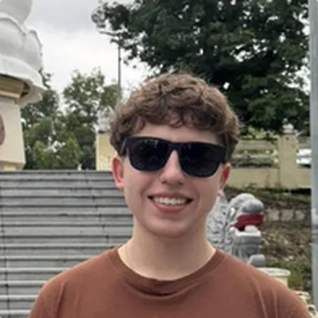

Mauricio
Villavicencio
studies how uncertainty, time, and stress shape the decisions people make with AI — and designs interfaces that keep that use honest to what people intend.
i. about

I’m a first-year Ph.D. student in Computer Science at the University of Maryland, College Park, working with Fumeng Yang in the FIGX Lab.
Before Maryland, I completed my B.S. and M.S. at the University of Minnesota, advised by Qianwen Wang in the Visual Intelligence Lab, and interned at Mayo Clinic and Boston Scientific on machine learning for healthcare.
ii. news
- August 2026 Began my Ph.D. in Computer Science at the University of Maryland.
- June 2026 A paper on human-centered LLM uncertainty was accepted to FAccT 2026.